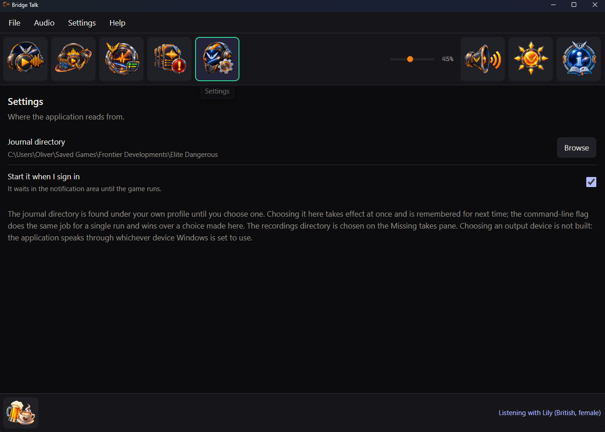
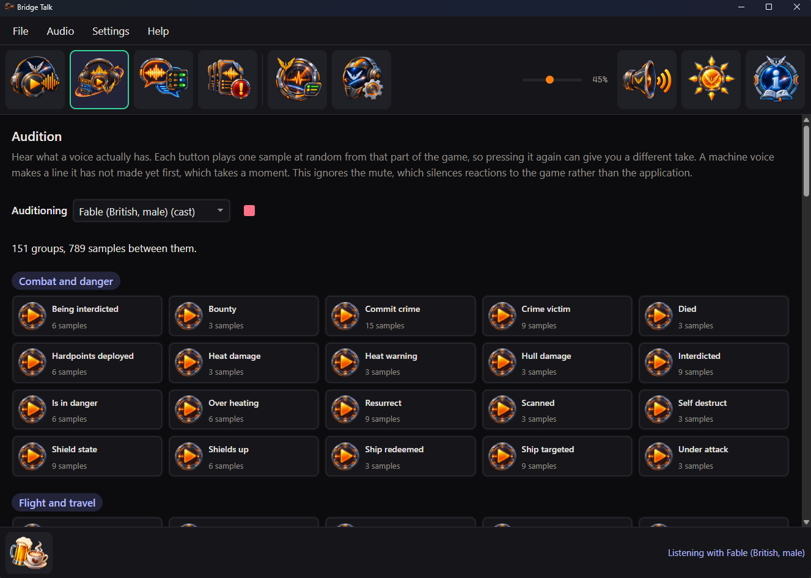
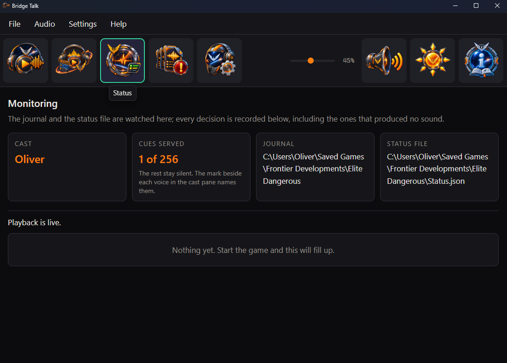
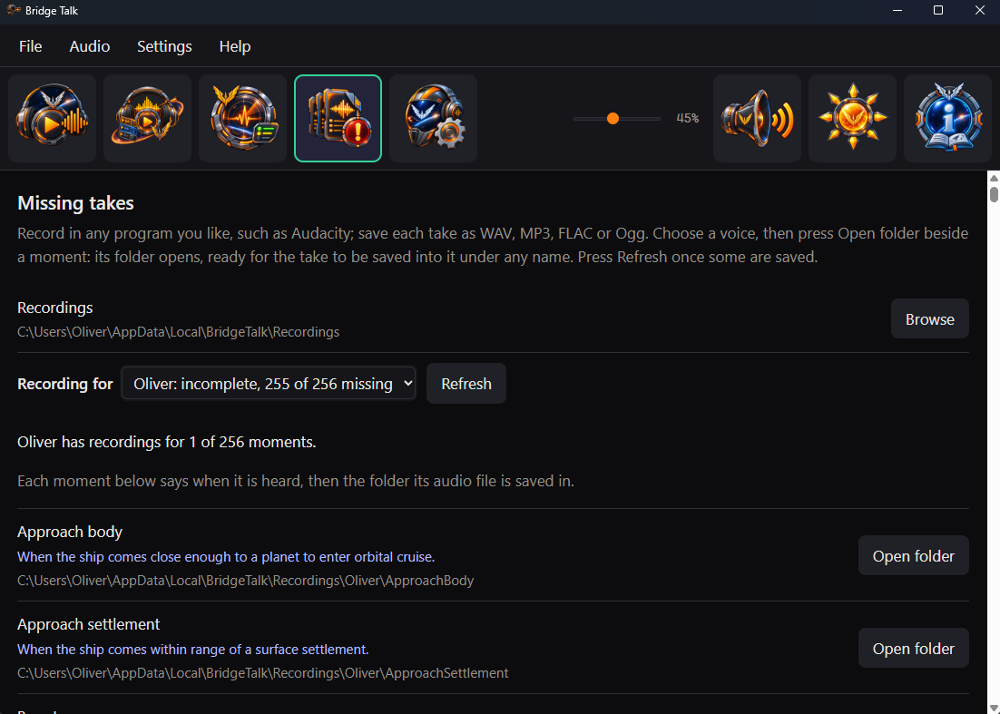
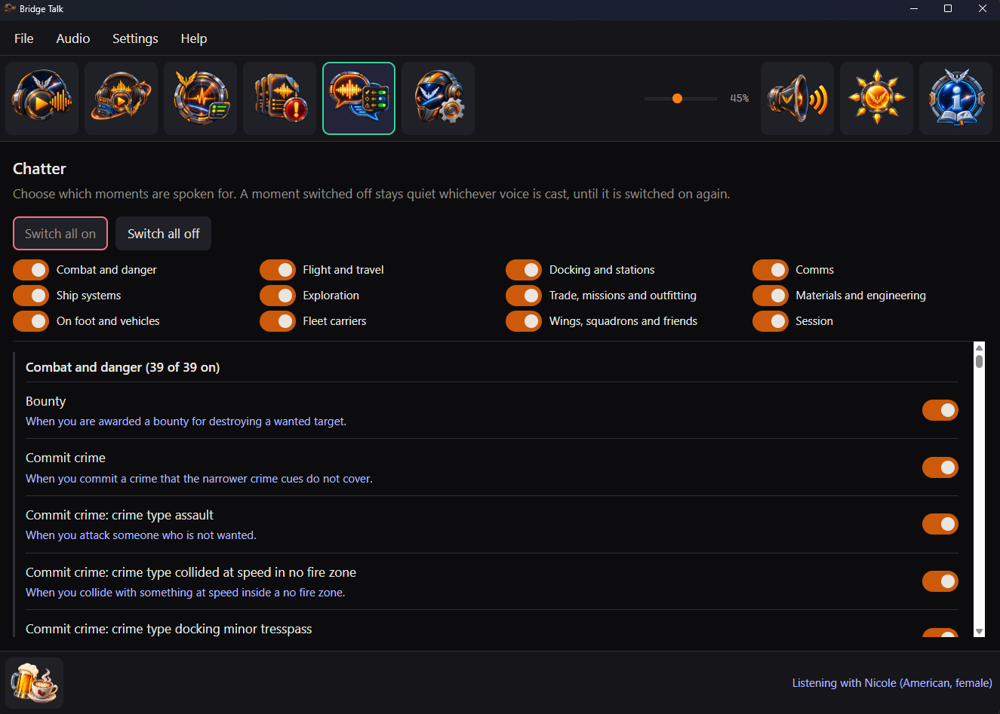

What Bridge Talk does, the 28 ready-made voices, how to record a voice of your own and a look at each pane of the window.
Bridge Talk follows the game while you play and answers each moment worth a word.
28 voices, British and American, female and male. Cast one and your ship starts talking.
Record yourself, a friend or a whole crew. Bridge Talk makes a folder for every moment, already named.
Docking, jumps, supercruise, fuel scooping, overheating, a pirate scanning your cargo, coming under fire and many more.
An urgent warning cuts straight in. Everyday updates wait their turn and idle chatter gives way.
Where a voice has more than one line for a moment, it picks a different one from last time.
The Audition pane plays any voice, chosen or not, one part of the game at a time.
The Missing takes pane lists every moment still waiting for a line, with when you will hear it.
The Status pane shows what was said and why anything was not, so a quiet ship is never a mystery.
The Chatter pane gives every moment a switch, under twelve categories. Switch one off, a whole category or all of them; station traffic has a switch of its own. Jump straight to a category or fold one away.
Put the window away and it keeps talking from the notification area. It can start when you sign in.
No microphone and no voice commands. Mute is one press away whenever you want quiet.
Bridge Talk never changes or removes a recording. Uninstalling leaves every one where it is.
Shortly after it starts and once a day it looks for a newer release; Check for updates on the Help menu asks straight away. When one is out, choose Download, Skip this version or Later.
Everything happens on your own computer. No account; its one request is an anonymous check for a newer release, which sends nothing about you or your game.
No recording needed. Cast any of them and your ship has a voice straight away. Each one is made on your own computer, so making one never goes online.
Not sure which? Listen to any of them on the Audition pane before you choose.
You never have to type a moment's name. Bridge Talk makes the folders for you; you fill them.
Cast, Audition, Chatter, Missing takes, Status and Settings sit along the top of the window, with the guide at its far end.




